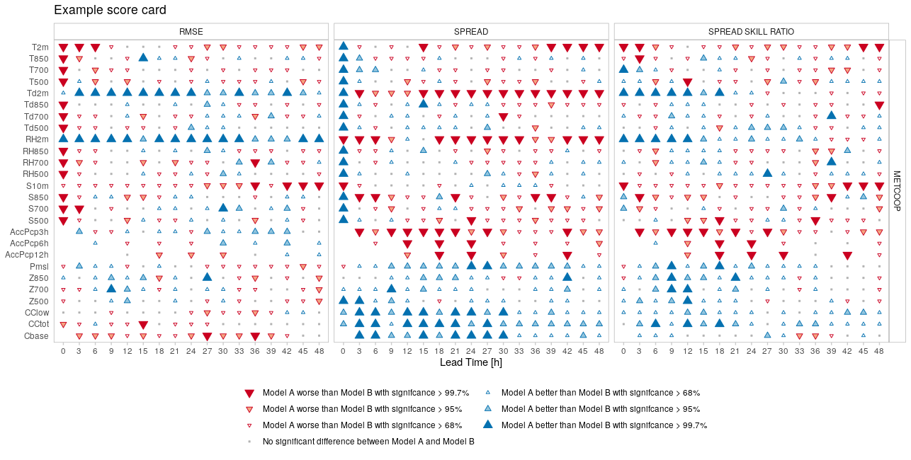

What is a score card?
Score cards provide a quick overview of the performance of one forecast model compared with another. It shows which model has better performance for a range of scores and statistical significance of those differences. The statistical significance is computed by pooling the data by, for example, forecast date, and computing the score for each pool and then sampling from those pools, with replacement, to compute a mean score. This process is repeated n times using a bootstrap method, and the difference between the forecast models for each mean score is calculated for each of the n bootstrap replicates. The proportion of the scores that are better for one model than another gives the confidence of the difference. The example below shows a score card comparing many parameters for a range of scores for two forecast models, named “Model A” and “Model B”.

Score card generation
The process for generating a score card involves several steps:
- Reading the forecast data
- Selecting the common cases for all forecast model
- Reading the observation data
- Joining the observation data to the forecast data
- Bootstrapping the verification
These steps are repeated for each parameter and then the results can be joined together into a single object and the score card plotted.
We will first go over how to compute the data for a single parameter, in this case 2m temperature, which in harp is “T2m”. We will use data from the MEPS_prod and AROME_Arctic_prod deterministic models that are in the harpData package. Since these data only include one forecast, we will pool the scores by observation station.
If you don’t already have the harpData package install it with:
remotes::install_github("harphub/harpData")Note that harpData contains close to 1GB of data so may take some time to download.
Now we can begin the score card generation…
library(harp)
#> Loading required package: harpIO
#> Loading required package: harpCore
#>
#> Attaching package: 'harpCore'
#> The following object is masked from 'package:stats':
#>
#> filter
#> Loading required package: harpPoint
#> Loading required package: harpVis
#> Loading required package: ggplot2
#> Loading required package: shiny
#> Loading required package: harpSpatial
param <- "T2m"
# Read the forecast data
fcst <- read_point_forecast(
dttm = seq_dttm(2019021700, 2019021718, "6h"),
fcst_model = c("AROME_Arctic_prod", "MEPS_prod"),
fcst_type = "det",
parameter = param,
file_path = system.file("FCTABLE/deterministic", package = "harpData")
)
# Select the common cases
fcst <- common_cases(fcst)
# Read the observations
obs <- read_point_obs(
unique_valid_dttm(fcst),
param,
obs_path = system.file("OBSTABLE", package = "harpData"),
stations = unique_stations(fcst)
)
# Join the observations to the forecast
fcst <- join_to_fcst(fcst, obs)
# Bootstrap the score. Since we use the parameter argument to select the
# parameter column in the data, we need to tell the function to use the
# param variable as a column name rather than a variable. We do this by
# wrapping in double curly brackets.
result <- bootstrap_verify(
fcst,
det_verify, # the function we want to use in the verification
{{param}},
n = 100, # the number of bootstrap replicates
pool_by = "SID"
)
result#> ::det_summary_scores:: # A tibble: 136 × 17
#> fcst_model ref_model lead_time score ref_score_mean ref_score_median
#> <chr> <chr> <dbl> <chr> <dbl> <dbl>
#> 1 MEPS_prod AROME_Arctic_prod 0 bias 0.114 0.118
#> 2 MEPS_prod AROME_Arctic_prod 0 mae 0.639 0.662
#> 3 MEPS_prod AROME_Arctic_prod 0 rmse 0.994 1.04
#> 4 MEPS_prod AROME_Arctic_prod 0 stde 0.988 1.03
#> 5 MEPS_prod AROME_Arctic_prod 3 bias 0.270 0.266
#> 6 MEPS_prod AROME_Arctic_prod 3 mae 1.35 1.38
#> 7 MEPS_prod AROME_Arctic_prod 3 rmse 2.01 2.04
#> 8 MEPS_prod AROME_Arctic_prod 3 stde 1.99 2.02
#> 9 MEPS_prod AROME_Arctic_prod 6 bias 0.358 0.352
#> 10 MEPS_prod AROME_Arctic_prod 6 mae 1.52 1.52
#> # ℹ 126 more rows
#> # ℹ 11 more variables: ref_score_upper <dbl>, ref_score_lower <dbl>,
#> # fcst_score_mean <dbl>, fcst_score_median <dbl>, fcst_score_upper <dbl>,
#> # fcst_score_lower <dbl>, difference_mean <dbl>, difference_median <dbl>,
#> # difference_upper <dbl>, difference_lower <dbl>, percent_better <dbl>
#>
#> --harp verification for T2m--
#> # for forecasts from 00:00 UTC 17 feb. 2019 to 18:00 UTC 17 feb. 2019
#> # using 181 observation stations
#> # for verification groups:
#> -> lead_timeThe score card will eventually be plotted from information in the “confidence of differences” data frame in the result. You don’t really need to be familiar with the content of the data frame, except to note that ‘fcst_model’ and ‘ref_model’ are column names and we will want to choose values from those columns when we come to plot the data.
Multiple parameters
Now that we have computed the data for one parameter, how should we
do it for multiple parameters? We could write a for loop around the
above code, but that isn’t all that flexible. It would be preferable to
turn the above into a function so that we can reuse it and use R’s
lapply function to apply our new function to multiple
parameters. Let’s start with making a function, being sure to not hard
code anything - we will need arguments for the start and end dates
(start_date and end_date), the frequency of
the forecasts (by), the names of the forecast models
(fcst_model), the forecast type (whether they are ensemble
forecasts or deterministic: fcst_type), the paths to the
forecasts and observations (fcst_path and
obs_path), the number of bootstrap replicates to do
(n), what to pool the scores by (pool_by), and
of course the parameter (param). Since we have such a small
amount of data in this example we need to set the minimum number of
cases to something small (min_cases) to ensure that the
function runs. We will also add a groupings argument, with the default
value “leadtime”, which we will use in a later example.
scorecard_function <- function(
param,
dttm,
fcst_model,
fcst_type,
fcst_path,
obs_path,
n,
pool_by,
min_cases,
groupings = "lead_time"
) {
# Output some information to the user
message("\n")
message("Generating scorecard data for ", param)
message("==============================", rep("=", nchar(param)), "\n")
fcst <- read_point_forecast(
dttm = dttm,
fcst_model = fcst_model,
fcst_type = fcst_type,
parameter = param,
file_path = fcst_path
)
fcst <- common_cases(fcst)
obs <- read_point_obs(
dttm = unique_valid_dttm(fcst),
parameter = param,
obs_path = obs_path,
stations = unique_stations(fcst)
)
# If no obervations were found return NULL
if (nrow(obs) < 1) return(NULL)
fcst <- join_to_fcst(fcst, obs)
if (fcst_type == "det") {
bootstrap_verify(
fcst,
det_verify,
{{param}},
n = n,
pool_by = pool_by,
min_cases = min_cases,
groupings = groupings
)
} else {
bootstrap_verify(
fcst,
ens_verify,
{{param}},
n = n,
pool_by = pool_by,
min_cases = min_cases,
groupings = groupings
)
}
}Now we have our function we can call if for multiple parameters using
lapply
parameters <- c("T2m", "S10m", "T850", "T700", "T500", "Td850", "Td700", "Td500")
scorecard_data <- lapply(
parameters,
scorecard_function,
dttm = seq_dttm(2019021700, 2019021718, "6h"),
fcst_model = c("AROME_Arctic_prod", "MEPS_prod"),
fcst_type = "det",
fcst_path = system.file("FCTABLE/deterministic", package = "harpData"),
obs_path = system.file("OBSTABLE", package = "harpData"),
n = 100,
pool_by = "SID",
min_cases = 5
)The output in scorecard_data is a list, with one element
for each parameter. Before we can plot the score card, we need to bind
all of those elements into a single element using
bind_point_verif.
scorecard_data <- bind_point_verif(scorecard_data)Now we can plot the score card using
harpVis::plot_scorecard. We need to tell the function which
model we want to assess and which model to use as the reference. We also
need to tell the function which scores we want to include in the score
card.
plot_scorecard(
scorecard_data,
fcst_model = "AROME_Arctic_prod",
ref_model = "MEPS_prod",
scores = c("rmse", "mae", "bias")
)